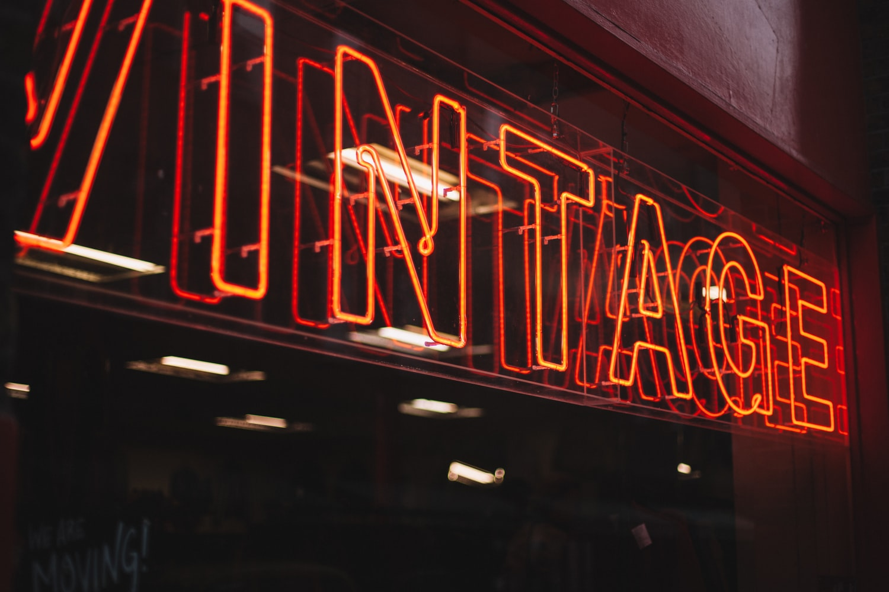

2000s Vintage Bags
John Galliano was the creative director of Dior from 1996-2011. He is known for his use of bold colors, monochrome prints and theatrical clothes. He drew inspiration from his everyday environment with alot of it coming from the famous London neighbourhood, Soho.
Dior bags
Tom Ford joined the creative team of Gucci in 1995. Tom Ford's revolutionary ideas changed the image of the brand. He added provocative, sensual dresses and experimented with different colors and textured and created futuristic and bold campaigns.
Gucci bags
The Fendi baguette bag has long had the status of an iconic bag. It is one of the most popular products of the brand. Immortalized during the 2000s by Sarah Jessica Parker's character in the hit tv-series "Sex and the City", the bag is now making a comeback with the brand producing new styles of it.
Fendi bags